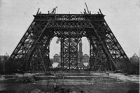

Alexandre Gustave Bönickhausen dit Eiffel, né le 15 décembre 1832 à Dijon (Côte-d'Or) et mort le 27 décembre 1923 à Paris, était un ingénieur et un industriel français qui participa notamment à la construction de la statue de la Liberté à New York et de la tour Eiffel qui porte son nom à Paris.
Gustave Eiffel est né dans un milieu aisé ; son père, officier d’origine rhénane, a épousé quelques années auparavant une femme d'affaires entreprenante. Celle-ci a investi dans le négoce du bois et de la houille et s'est constitué une solide fortune personnelle. En 1843, Eiffel entre au collège Sainte-Barbe avant d'être admis en 1852 à l'École centrale des arts et manufactures à Paris, en plus de son admissibilité à l'École polytechnique. Il effectue au sein de l'institution de brillantes études et obtient un diplôme d'ingénieur chimiste en 1855.
Après s'être employé pendant quelques mois à la poudrerie de Châtillon-sur-Seine puis à la Compagnie des chemins de fer de l'Ouest, Eiffel fait la rencontre, en 1856, de Charles Nepveu. Cet entrepreneur s'est spécialisé dans la construction métallique. Grâce aux progrès de la métallurgie, celle-ci connaît, à cette époque, une grande diffusion. Résistant, léger et facile à manipuler, ce matériau est bien souvent préféré à la pierre par souci d'économie. Le jeune ingénieur fait bientôt la preuve de ses talents. Sa première grande réalisation est le pont ferroviaire de Bordeaux en 1858, chantier dont il assume, à vingt-six ans, la direction. Gustave Eiffel utilise alors pour la première fois la technique de fondation à l'air comprimé lors de l'exécution des piles tubulaires. Le succès de l'entreprise, qui doit relier la Compagnie des chemins de fer du Midi à la Compagnie du chemin de fer de Paris à Orléans, lui assure une première renommée.
Avant la tour Eiffel, Gustave Eiffel a contribué à la création de la statue de la Liberté, New York
Quelques années plus tard, Eiffel, qui bénéficie déjà d'une solide expérience, décide de fonder sa propre société. En 1866, il fait l'acquisition d'ateliers de constructions métalliques à proximité de Paris, à Levallois-Perret, alors dans l'ancien département de la Seine.
L'entreprise emporte alors plusieurs grandes commandes d'édification de viaducs et de bâtiments à structure ou charpentes métalliques. Pour ce faire, il n'hésite pas à parcourir l'Europe entière.
La tour Eiffel est construite en 1887-1889 pour l'Exposition universelle de 1889 à Paris. Ville dont elle est devenue le symbole.
L'ambition de réaliser une tour « haute de plus de mille pieds », taraude l'esprit des plus audacieux architectes dans le monde entier. Mais ceux-ci se heurtent à d'innombrables problèmes techniques. Ainsi, en 1885 s'achève difficilement la construction en maçonnerie de l'obélisque de Washington, haut de 169 mètres, et le Chrysler Building est encore dans les limbes... Mais « l'idée d'une tour monumentale hante les airs »... En 1874, Clarke et Reeves prétendent élever à Philadelphie une tour de plus de 914 mètres, qui ne voit pas le jour. En France, Bourdais et Sébillot conçoivent une colonne en maçonnerie de 300 m de haut, irréalisable selon les connaissances technologiques de l'époque. Les difficultés sautent aux yeux, mais ce rêve de tour hante le paysage fantasmatique de beaucoup d'architectes de l'époque, sans succès.
En France, après la défaite de Sedan et la perte de l'Alsace-Lorraine, la République renaissante et encore fragile a besoin pour marquer le centenaire de la Révolution de 1789 d'un coup d'éclat. Dès 1878, le gouvernement de Jules Ferry envisage l'organisation d'une grande Exposition universelle dont l'inauguration est fixée au 5 mai 1889.
Alors que le projet d'une Exposition universelle est définitivement adopté en 1883, deux ingénieurs de l'entreprise Eiffel, Émile Nouguier et Maurice Koechlin, ont l'idée d'une tour métallique. Leur ébauche, mise en forme le 6 juin 1884, s'embellit avec la collaboration de l'architecte Stephen Sauvestre, qui affine et décore l'édifice.
D'abord réticent, Gustave Eiffel s'approprie l'idée de ses collaborateurs (Maurice Koechlin) en rachetant le brevet déposé le 18 septembre 1884.
Il s'agit maintenant pour lui de vendre sa tour. C'est sous le label ci-dessus qu'il la propose d'abord au maire de Barcelone — où doit bientôt se tenir une autre Exposition universelle - qui refuse, jugeant le projet « peu réaliste et surtout beaucoup trop onéreux ».
Pour éviter un nouvel échec, l'entrepreneur comprend qu'il doit rendre son projet crédible aux yeux des édiles mais aussi de l'opinion publique. Il se démène alors comme un beau diable, dépensant des fortunes en articles de presse, publicité et relations publiques (notamment auprès d'Édouard Lockroy, ministre du Commerce et commissaire général de l'exposition).
Son projet qui fait l'unanimité, l'emportera finalement sur tous les autres candidats, le 1er mai 1886, ce qui permet à l'ingénieur de signer une convention avec le gouvernement, le 8 janvier 1887. Cet acte en précise le financement et l'emplacement, en bord de Seine — dans l'axe du pont d'Iéna — autrement dit au centre de la capitale. L'homme a une réputation excellente, il sait s'entourer d'hommes remarquables, comme Émile Nouguier et Maurice Koechlin. C'est un bourreau de travail, un homme respecté (à Bordeaux, il a sauvé un ouvrier de la noyade en se jetant dans le fleuve). Il va vite et loin avec des idées neuves et simples. Enfin, et surtout, il avance de sa poche 80 % des frais des travaux, estimés à 8,5 millions de francs or. Les autorités lui accordent une concession de vingt ans, à dater du 1er janvier 1890, au terme de laquelle la tour reviendra à la ville de Paris.
Le chantier s'ouvre le 28 janvier 1887. On creuse des entonnoirs dans le Champ-de-Mars pour recevoir les maçonneries des piliers, on assèche le terrain. On pose « 4 fameux vérins hydrauliques », bref on invente des solutions à chaque étape. Tous les éléments sont préparés à l'usine de Levallois-Perret puis transférés sur le site.
Le projet de construction de la Tour suscita d'ardentes hostilités. Dès le premier coup de pioche, en janvier 1887, une « Protestation des artistes » contre son édification est signée des noms les plus remarquables : Charles Gounod, Charles Garnier, Victorien Sardou, Alexandre Dumas fils, François Coppée, Sully Prudhomme, Leconte de Lisle, Guy de Maupassant, Huysmans... « Méfions-nous des grands hommes » aurait dit alors Eiffel.
Le 28 janvier 1887, les travaux commencent et bientôt, les Parisiens assisteront, mi-hébétés mi-émerveillés, à la majestueuse élévation de l'édifice, au « rythme incroyable » de douze mètres par mois. Sur le chantier ne s'effectue que l'assemblage des éléments de la Tour. Ceux-ci sont dessinés et fabriqués dans les ateliers Eiffel, à Levallois près de Paris. L'entrepreneur, qui surveille jour et nuit l'avancement des travaux, doit cependant faire face à une grève retentissante des ouvriers du chantier. En effet, leurs conditions de travail bien particulières ne justifient-elles pas des salaires à la mesure des risques encourus ?
Eiffel, qui n'a plus qu'une idée en tête, accepte et octroie des salaires exorbitants (pour l'époque). Le 14 juillet 1888, le deuxième étage est atteint ; le 31 mars 1889, le troisième étage est terminé. « Stupéfiante prouesse technique, remarquable rapidité d'exécution » (26 mois) permettent à la tour, « la plus haute du monde » (depuis celle de Babel, rajoutent les mauvaises langues) d'être inaugurée, deux ans plus tard, le 31 mars 1889. Eiffel, qui a respecté les délais impartis, reçoit la Légion d'honneur (distinction rare à l'époque). À partir du 15 mai suivant, le monument est ouvert au public qui se déclare émerveillé non seulement par la vue mais surtout par les ascenseurs hydrauliques « ultra rapides » et tout à fait novateurs. Et, en moins de six mois, jusqu'à la clôture de l'Exposition universelle, le 6 novembre suivant, la tour recevra deux millions de visiteurs. C'est l'absolu succès, à la mesure des polémiques suscitées auparavant. Citons quelques extraits de la Presse d'alors : « À peine finie, la tour s'écroulera et tuera des milliers de Parisiens », « Arrivés au sommet, les visiteurs seront asphyxiés », « Le tout s'enfoncera sous terre créant un véritable cataclysme »…
Qu'importe, 1889 sera pour Eiffel, l'année du triomphe et l'apogée de sa double carrière d'ingénieur et d'entrepreneur.
Fort de ce succès, Eiffel s'engage aussitôt dans la construction des écluses du canal de Panamá. En effet, le percement du canal n'avance pas et Ferdinand de Lesseps abandonne l'idée d'un canal au niveau de la mer et se range à l'idée d'Eiffel de constructions de grandes écluses. Mais en 1893, la Compagnie, placée sous la présidence de Lesseps, est éclaboussée par un énorme scandale financier lié, entre autres, à la corruption de parlementaires chargés d'étouffer, face à l'opinion, la quasi-banqueroute de la société. Eiffel démissionne de la société qu'il a créée trente ans auparavant. Il est condamné en première instance à deux ans de prison et à 20 000 francs d'amende. Ce jugement est cassé par la Cour de cassation grâce à la brillante défense de son avocat, Pierre Waldeck-Rousseau, qui, le mettant hors de cause, lui permet d'être réhabilité.
Eiffel, qui est plus ingénieur que financier, durement atteint par la polémique, se retire « des affaires » pour se consacrer uniquement à la pérennité de « sa Tour ». Or celle-ci n'est pas assurée, Eiffel n'en possède la jouissance que jusqu'en 1910 ; de plus, la visite en est boudée par le public qui se presse de nouveau à Paris pour l'Exposition de 1900. La tour Eiffel est passée de mode. Il lui préfère le tout nouveau métropolitain dû à un autre ingénieur Fulgence Bienvenüe et surtout le trottoir roulant qui passent tous deux à proximité.
Eiffel s'acharnera désormais à en démontrer l'utilité. Il fera installer un laboratoire météo à son sommet en 1898 puis, quelques années plus tard, en 1901, un émetteur permanent de TSF. Il se sent obligé de trouver toutes sortes d'utilités scientifiques à la Tour, mesures de radioactivité, analyse de l'air, expérience du pendule de Foucault, etc. « Elle ne sera pas simplement un objet de curiosité pour le public, soit pendant l'Exposition, soit après, mais elle rendra encore de signalés services à la science et à la Défense nationale ». Défense nationale, les mots magiques sont lâchés.
Mais, plus que la TSF, encore balbutiante (et en attendant la télévision), c'est en fait l'avènement de l'aviation et l'intérêt stratégique que lui portent désormais les militaires français qui sauvera définitivement le monument du démantèlement qui le menaçait (déjà quelques ferrailleurs lui avaient fait des propositions écrites...). « Cette tour présente un intérêt stratégique pour la Défense nationale » dira le général Ferrié. Ouf, la tour est sauvée !
L'ingénieur, qui mise d'emblée sur l'avenir du « plus lourd que l'air », se lance dans des travaux d'aérodynamique, spécialité à laquelle il s'était précédemment intéressé lors de la construction de la tour. Il a d'ailleurs utilisé la tour pour réaliser des expériences sur la chute libre. En 1909, il installe une première soufflerie au Champ-de-Mars, puis en 1912, une deuxième à Auteuil, dans la très proche banlieue. Dans ce laboratoire, il conçoit une soufflerie qui lui permettra de confirmer ses résultats avec ses expériences sur la chute libre, avec très bonne précision. Il a démontré expérimentalement dans ce laboratoire le principe de mouvement relatif : les forces exercées sur un corps au repos dans un courant sont égales aux forces que subit un corps qui se meut à la même vitesse dans l'air au repos. La conception de cette soufflerie a inspiré celles qui sont utilisées de nos jours.
Pendant la Première Guerre mondiale, Eiffel poursuit ses recherches sur les hélices, la voilure mais aussi sur les projectiles. Ses travaux aboutiront en 1917 à la conception d'un avion de chasse monoplan. Il fera don de toutes ces installations à l'État en 1921.